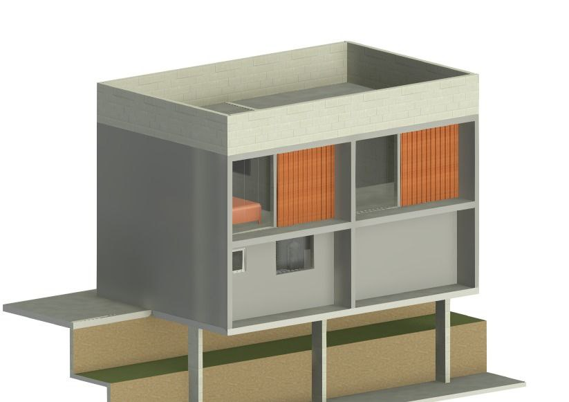
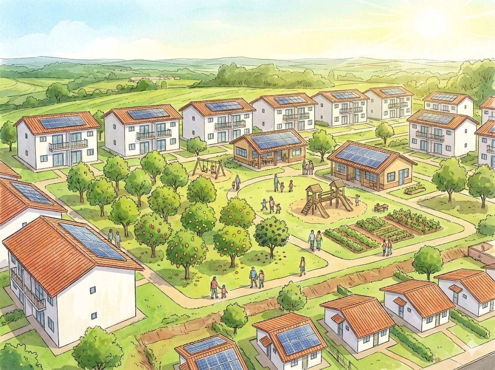

Conheça a IMOBX
Quem é você?
Escolha o que mais combina, e o passeio mostra o que importa para você.
Um lugar para chamar de lar
“Construir um lar é uma busca existencial de todo ser humano, onde quer que esteja.”
John, cofundador
A IMOBX vai ajudar famílias do Rio de Janeiro a alugar um apartamento e a comprá-lo aos poucos, por meio de uma cooperativa habitacional administrada pelos próprios moradores.
Proprietários não conseguem vender. Sonhadores não conseguem comprar.
“O absurdo do Brasil não é o preço dos imóveis, é a taxa de juros.”
Rafael, cofundador
Os preços pedidos nos aluguéis sobem mais rápido que a inflação, e milhões de famílias pagam aluguel por anos sem chegar mais perto da casa própria.
Um apartamento para começar
Uma família já aluga um apartamento no prédio de Guadalupe que a Olympus, a construtora do Rafael, construiu.
O que acontece no dia do aluguel?
“O impacto social é o fato de ele poder ser dono do imóvel quanto mais pagar o aluguel.”
John, cofundador
O plano é começar sem entrada. Todo mês você paga como paga o aluguel hoje, e parte de cada pagamento vai para o apartamento. Antes de você se mudar, o preço, o pagamento mensal e a parte que vai para o apartamento são combinados e escritos. O apartamento passa para o seu nome quando as condições do seu contrato forem cumpridas.
E se um mês ficar difícil?
Muita gente no Rio ganha por bico ou sem carteira assinada, e a renda muda de um mês para o outro. Se você atrasar, pretendemos começar com um lembrete e uma conversa para encontrar um caminho, e escrever cada passo seguinte no contrato.
Você tem um imóvel ou um terreno?
Os cinco primeiros apartamentos novos precisam de um terreno de 200 a 300 m² em Anchieta, Pavuna, Bangu ou Santa Cruz. Mais adiante, se a IMOBX puder oferecer garantias e seguro, quem tem uma casa poderá vendê-la a uma família pelo aluguel com compra.
O atraso no pagamento preocupa muitos proprietários que alugam um imóvel: em julho de 2026, 3,68% dos aluguéis acompanhados pelo índice da Superlógica no estado do Rio estavam com mais de 60 dias de atraso. O plano: cada atraso segue passos escritos no contrato.
Fonte: Índice de inadimplência de aluguel da Superlógica, via Diário do Rio. Cobre contratos administrados com o software da Superlógica, não todos os aluguéis do estado.
Por que construir, em vez de comprar?

“Os imóveis nos grandes centros são muito caros, por isso que devemos construir, ao invés de comprar pronto.”
Rafael, cofundador
O Rafael é engenheiro civil e tem a sua própria construtora, a Olympus. Depois do apartamento de Guadalupe, pretendemos construir cinco apartamentos novos de cada vez.
Quem constrói e quem confere
“Vou fechar parcerias com colegas de construção e fornecedores também.”
Rafael, cofundador
A estimativa do Rafael parte do CUB, o índice público de custo da construção do Rio, e soma 35% para despesas gerais e para a margem da construtora dele.
Um advogado, um contador e um engenheiro independentes vão conferir os contratos e a obra dos primeiros apartamentos.
A vila que queremos

“Agora estamos todos fragmentados, mas tenho certeza de que, aos poucos, podemos crescer em comunidades pequenas, mas mais fortes e resilientes.”
John, cofundador
No desenho do Rafael, pequenos prédios com apartamentos de 45 m² ficam em volta de um pátio comum, para os pais verem os filhos brincando, com um pomar, energia solar nos telhados e salas para estudar. Ele vem depois dos cinco primeiros apartamentos.
Quem decide?
“Não dá para chegar à autossuficiência ou a comunidades integradas sem uma boa organização por trás.”
John, cofundador
A IMOBX será uma cooperativa habitacional. Os membros vão ser donos dela e vão administrá-la juntos, com um voto cada. O contrato de cada família tem proteção à parte, como explicam Termos e leis.
Para onde vão os recursos dos vizinhos?
Quando vizinhos juntam recursos para construir apartamentos, querem ver para onde eles vão. Queremos um registro distribuído que qualquer pessoa possa ler, com cada pagamento e a função de quem o aprovou. Os contratos e os dados pessoais das famílias ficam privados.
Como o registro distribuído funcionaria Quem aprova e quem confere
Para os curiosos: o token
Mais adiante, a IMOBX também planeja um token de financiamento comunitário, em que o que entra no projeto volta a ser usado. Os apartamentos novos são financiados à parte, a começar por uma campanha de financiamento coletivo.
Como os primeiros apartamentos serão financiados?
A obra começa a ser financiada por uma campanha de financiamento coletivo em reais, assim que a cooperativa estiver registrada. Depois vem financiamento ligado ao Objetivo de Desenvolvimento Sustentável 11 da ONU, sobre cidades e comunidades sustentáveis.
Quem financia deve poder acompanhar, em relatórios publicados, o que os cinco primeiros apartamentos mudam: quantas famílias se mudaram, o aluguel antes e depois, e a segurança do direito de cada família de continuar morando ali. Nomes e contratos ficam privados.
Como a IMOBX cresce?
“Primeiro trabalhamos com provas. E provas geram confiança. E com confiança, dá para atrair mais recursos e crescer.”
John, cofundador
Primeiro uma família, depois cinco apartamentos de cada vez, depois proprietários que queiram entrar com as suas casas.
Quem começou a IMOBX, e por quê?
“Quando a vida aperta, a primeira coisa que queremos é entrar na nossa caverna e nos proteger. Por que ter a própria caverna não é um direito de todos? A IMOBX é a minha resposta a essa pergunta.”
Rafael, cofundador
“Desde 2005, procuro formas para que as comunidades compartilhem o que pertence a todos. A proposta da IMOBX leva essa ideia de compartilhar à moradia.”
John, cofundador
John é engenheiro de tokens e designer ecológico. Ele está construindo o SIAH Protocol, um registro de contribuições que outras pessoas confirmam.
Sobre a IMOBX Documentos e fontes A pesquisa sobre propriedade compartilhada
Sua vez
“Qualquer pessoa que tenha uma visão parecida com a nossa, entenda o problema e tenha os meios ou a dedicação para resolvê-lo. É esse o tipo de pessoa que queremos atrair.”
John, cofundador
Precisamos das pessoas que vão fundar a cooperativa com a gente.